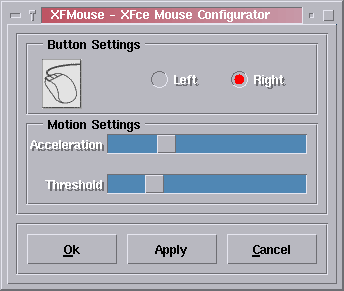

- Selectionnez "Droit" ou "Gauche" suivant que vous êtes droitier ou gaucher. Si vous sélectionnez "Gaucher", le bouton logique numéro 1 sera affecté au bouton physique numéro 3 alors que le bouton logique numéro 3 sera affecté au bouton physique numéro 1. Le bouton 2 (milieu) est laissé inchangé. Notez que ce paramétrage est global au serveur X et affecte toutes les applications fonctionnant sur le terminal.
- "Accélération" détermine de combien de pixels le pointeur est déplacé par rapport au déplacement physique de la souris.
- "Seuil" spécifie de combien de pixels le pointeur physique doit être déplacé pour que "accélération" prenne effet.
Ls systeme de configuration de la souris dans XFce Mouse est une interface graphique qui permet de modifier les parametres de lasouris facilement.
1) Le concept
XFMouse peut-être lancé depuis la ligne de commande ou depuis le fichier system.xfwmrc au démarrage (défaut). Si aucun paramêtre n'est spécifié, la commande "xfmouse" lit juste le fichier de configuration de l'utilisateur et applique les paramêtres en conséquence.
Pour accéder à l'interface graphique, l'utilisateur doit spécifier le paramêtre "-i" lors de lappel depuis la ligne de commande.
2) L'interface utilisateur
En démarrant XFMouse par la commande xfmouse -i,
on obtient l'interface graphique de XFMouse :

3) Démarrer XFmouse automatiquement
XFMouse est démarré par les fonctions réservées "InitFunction" et "RestartFunction" dans le fichier system.xfwmrc.
Si vous avez modifié la version de system.xfwmrc (également
appelée sample.xfwmrc ou .xfwmrc), vous devrez
ajouter les lignes suivantes a votre fichier de configuration system.xfwmrc
:
| AddToFunc "InitFunction"
+ "I" Exec xfmouse -d AddToFunc "RestartFunction"
|